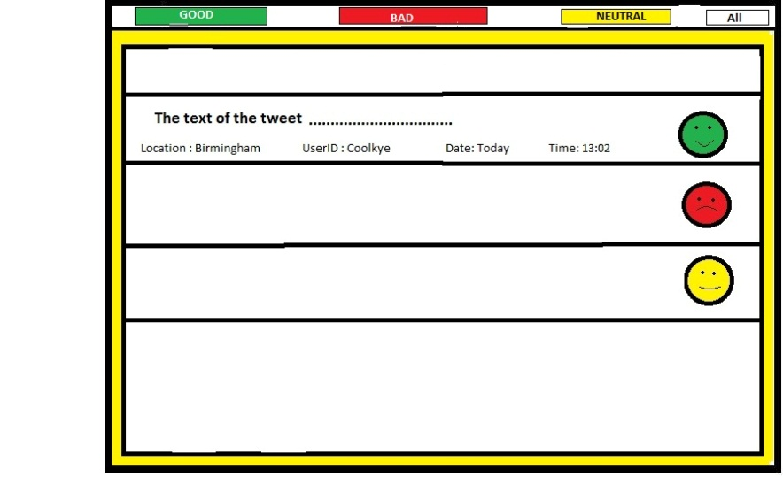
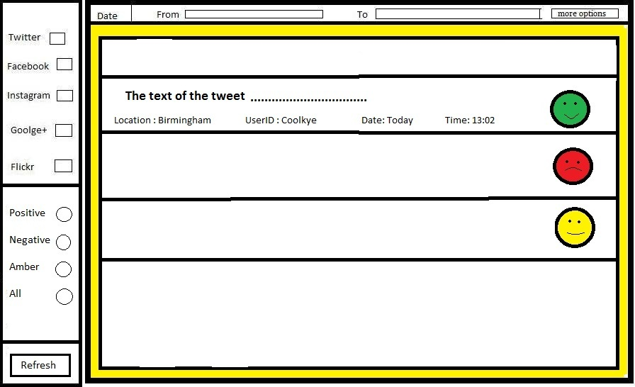

Description of prototypes:
After a couple of internal and external meetings, it has been decided that we are going to create a prototype in order to create the application usable in the first place, before developing all the algorithms that the final version will include.The team has decided that we are going to have one prototype only, with finishing deadline this term (the 12th of December, 2014). Therefore, this is what the prototype should include:
- 3 buttons of GOOD,BAD and AMBER sentiment analysis that do not affect the app at all at this point
- A displaying of actual real tweets and/or Facebook posts
- A random tagging of the in-pulled tweets
- A sensible UI design that respects Norman’s principles and the other requests of the prototype
- The prototype that we are going to build will be built using PHP
|

|
The final application should include the following:
- Buttons for positive, negative and amber selections
- Selection options for each of the existent media platforms
- A displaying of actual real tweets and/or Facebook posts
- Searching criterias added for time, geolocation and user searches
- A sensible UI design that respects Norman’s principles and the other requests of the prototype
- A proper tagging of each of the tweets as being GOOD, BAD or AMBER
- A back-hand algorithm that analyses each tweet
- The final application will run using Django
|

|